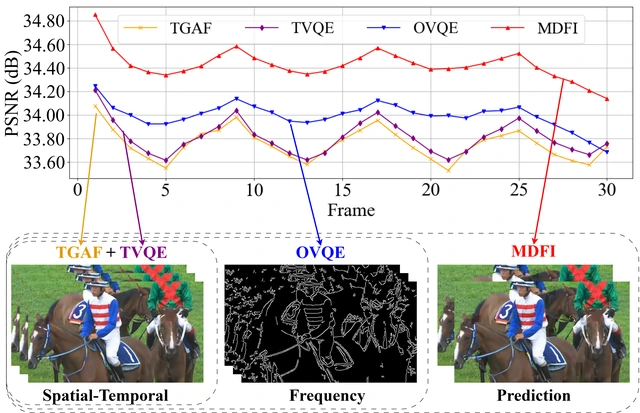
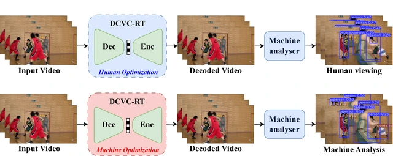
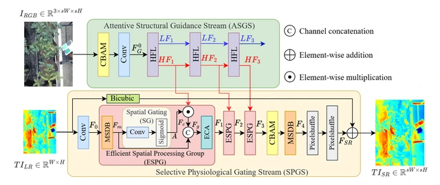
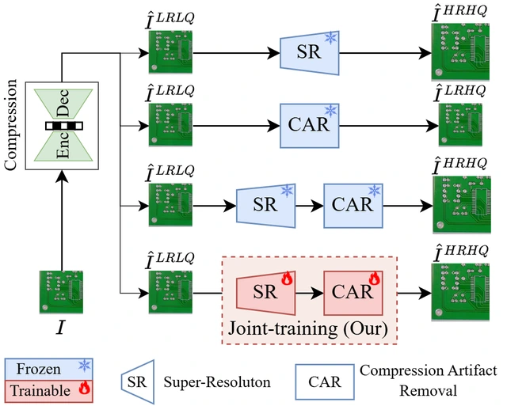
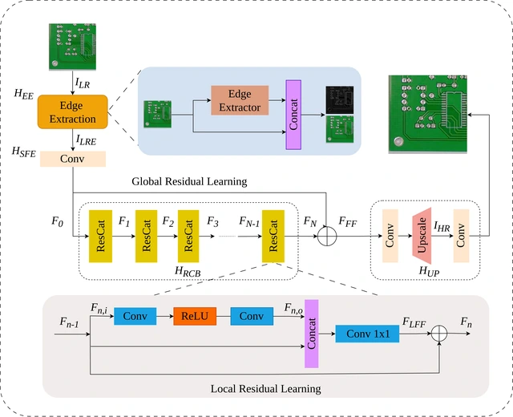
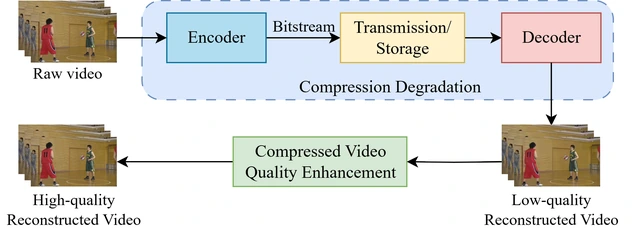

MDFI: A Multi-Domain Features Integration for Compressed Video Quality Enhancement
Sang NguyenQuang, Hieu Bui Minh, Dang BuiDinh, Xiem HoangVan
IEEE Transactions on Consumer Electronics, 2026.
[Project Page, Paper, Code, Dataset]
Hi, I'm Dang!
I am currently a master’s student in Electronics Engineering and a Research Assistant in the Department of Robotics Engineering at VNU University of Engineering and Technology.
My research focuses on artificial intelligence, deep learning, computer vision, image and video enhancement, and efficient visual systems.
I am particularly interested in developing practical vision models for image super-resolution, low-light image enhancement, video quality enhancement, and machine vision applications.
Position: Research Assistant – VNU University of Engineering and Technology.
Contact: dangdinh@vnu.edu.vn
Education:
Master’s student in Electronics Engineering, VNU University of Engineering and Technology (ongoing).
B.S.E. in Robotics Engineering, VNU University of Engineering and Technology, 2021–2025.
Research interests: Artificial Intelligence; Deep Learning; Computer Vision; Machine Vision; Image Super-Resolution; Low-Light Image Enhancement; Video Quality Enhancement; Video Coding.

Sang NguyenQuang, Hieu Bui Minh, Dang BuiDinh, Xiem HoangVan
IEEE Transactions on Consumer Electronics, 2026.
[Project Page, Paper, Code, Dataset]

Dang BuiDinh, Truong VuXuan, Duy PhamThe, An NguyenThanh, Xiem HoangVan, Minh DoNgoc
RIVF, 2026.

Phan NguyenPhu, Minh TranQuang, Sang NguyenQuang, Dang BuiDinh
International Conference on Advanced Technologies for Communications (ATC), 2026.

Dang BuiDinh, Sang NguyenQuang, Anh NguyenPhuong, Wen-Hsiao Peng, Xiem HoangVan
International Conference on Advanced Technologies for Communications (ATC), 2026.

Xiem HoangVan, Dang Bui Dinh, Thanh Nguyen Canh, Van-Truong Nguyen
Engineering Applications of Artificial Intelligence, 159, 111547, 2025.
[Project Page, Paper, arXiv, Code]

Xiem HoangVan, Dang BuiDinh, Sang NguyenQuang, Wen-Hsiao Peng
International Conference on Advanced Technologies for Communications (ATC), 2025. Accepted.
X. Hoang Van and D. Bui Dinh
Vietnam Patent Application No. 1-2025-05274 (pending), 2025.
Third Place, Student Research Competition
VNU University of Engineering and Technology, Hanoi.